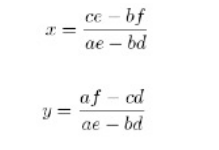
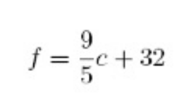
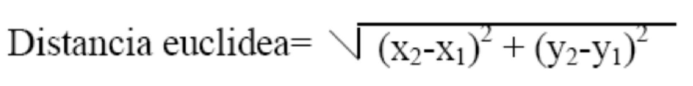
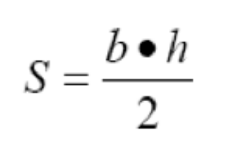
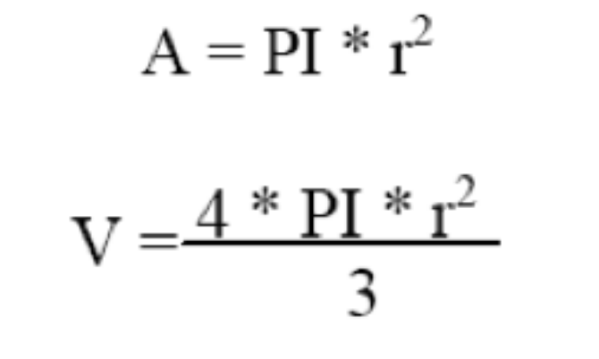
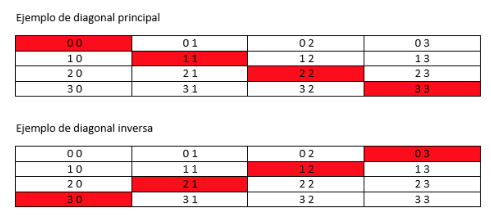

Ejercicios Unidad 2 - Programación Estructurada
Resultados de Aprendizaje
Estos ejercicios trabajan los siguientes RAs del módulo de Programación:
- RA2, RA3, RA5 y RA6 — Escribe y depura código utilizando las estructuras de control del lenguaje. Desarrolla programas aplicando la programación estructurada e introduciendo el tratamiento de datos.
Instrucciones Generales
- Resuelve cada ejercicio en los formatos indicados:
p(pseudocódigo),df(diagrama de flujo) oj(Java). - Si un ejercicio no especifica de dónde obtener los datos, siempre se deben solicitar por teclado al usuario.
Bloque 1: Repaso de Fundamentos
-
(p, j) Conversor de Unidades: Crea un programa que convierta una medida de pulgadas a centímetros. Solicita la cantidad de pulgadas y muestra el resultado.
Pista
1 pulgada = 2.54 cm.
-
(p, j) La Potencia Cúbica: Escribe un programa que pida un número al usuario y calcule su cubo (el número multiplicado por sí mismo tres veces).
-
(p, j) Geometría del Cilindro: Programa para una fábrica de envases que calcule el área total y el volumen de un cilindro. Pide radio y altura.
Pista
- Volumen:
V = PI * r² * h - Área:
A = 2 * PI * r * h + 2 * PI * r²
- Volumen:
-
(df, j) El Teorema de Pitágoras: Diseña un programa que calcule la hipotenusa de un triángulo rectángulo a partir de los dos catetos.
Pista
hipotenusa² = cateto1² + cateto2² -
(df, j) Conversor Imperial: Desarrolla un programa que convierta una distancia en metros a pies y pulgadas.
Pista
1 metro = 39.27 pulgadas; 1 pie = 12 pulgadas.
-
(p, df, j) El Juego de los Vasos: Tienes tres vasos (variables A, B, C). Intercambia sus contenidos: B toma el valor de A, A toma el valor de C, y C toma el valor de B. ¿Cómo lo harías sin perder el contenido original?
Pista
Puede que necesites un vaso auxiliar temporal.
Bloque 2: Estructuras Condicionales
-
(df, j) ¿Par o Impar?: Pide un número entero y determina si es par o impar, mostrando un mensaje claro al usuario.
-
(p, j) Filtrando Pares: Pide dos números enteros y muestra todos los números pares que se encuentren en ese rango.
Nota
Este ejercicio requiere estructuras repetitivas.
-
(p, j) Producto de Positivos: Lee 5 números por teclado y calcula el producto de todos los que sean positivos. Los no positivos se ignoran.
-
(p, j) División Segura: Pide dos números al usuario. Realiza la división decimal del primero entre el segundo y muestra el resultado.
Precaución
Asegúrate de que el divisor no sea cero antes de operar.
-
(df, j) El Ordenador de Números: Pide tres números enteros y muéstralos ordenados de menor a mayor.
-
(df, j) Mini-Calculadora: Pide dos números y muestra el resultado de su suma, producto y división.
Precaución
Si el segundo número es cero, la división no es posible. Muestra un mensaje de error en lugar de intentar la operación.
-
(p, j) Calculadora de Superficies: Calcula el área de un rectángulo a partir de la base y la altura.
Pista
área = base * altura -
(p, j) El Detector de Signo: Pide un número y di al usuario si es "Positivo" o "Negativo". (Considera el cero como positivo).
-
(p, j) Resolviendo Ecuaciones: Un sistema de ecuaciones lineales (
ax + by = c,dx + ey = f) se puede resolver con las fórmulas de Cramer. Pide los coeficientes y calculaxey.
-
(p, j) Conversor de Temperatura: Convierte una temperatura de grados Celsius a Fahrenheit.

-
(df, j) Detector de Años Bisiestos: Pide un año y determina si es bisiesto.
Reglas
Un año es bisiesto si es divisible por 4, excepto si es divisible por 100, a menos que también sea divisible por 400. (Ej: 2000 es bisiesto, 1900 no lo es).
-
(df, j) Calendario Mensual: Pide un número de mes (1-12) y, usando
switch, muestra cuántos días tiene ese mes. (No te preocupes por años bisiestos). -
(df, j) Taquilla del Fútbol: Programa el sistema de precios de un partido de fútbol sala:
Edad Precio Menores de 5 años Gratis Entre 5 y 15 años 2€ Mayores de 15 años 3€ -
(p, j) Calificador de Exámenes: Pide la nota de un examen (0-10) y el sexo del alumno ('H' o 'M'). Muestra la calificación adaptada al género:
Nota Masculino Femenino < 5 SUSPENSO SUSPENSA ≥ 5 y < 7 APROBADO APROBADA ≥ 7 y < 9 NOTABLE NOTABLE ≥ 9 SOBRESALIENTE SOBRESALIENTE -
(p, j) Clasificador de Triángulos: Pide las longitudes de los tres lados y determina si el triángulo es:
- Equilátero: 3 lados iguales.
- Isósceles: 2 lados iguales.
- Escaleno: Ningún lado igual.
-
(p, j) Gestor de Notas: Pide las 4 notas de un alumno, calcula el promedio y muestra si ha "Aprobado" o "Suspendido". Se aprueba con un promedio ≥ 4.5.
-
(df, j) Evaluación de Nivel: Calcula el porcentaje de aciertos de un test (total de preguntas y respuestas correctas). Muestra el nivel:
Porcentaje Nivel ≥ 90% Muy Bueno ≥ 70% y < 90% Bueno ≥ 50% y < 70% Regular < 50% Malo -
(p, j) Distancia Euclidiana: Calcula la distancia entre dos puntos P1(x1, y1) y P2(x2, y2).

-
(df, j) Asignador de Colores: El usuario introduce un carácter y el programa muestra el color asignado (ignora mayúsculas/minúsculas):
Carácter Color rROJO vVERDE aAZUL nNEGRO
Bloque 3: Estructuras Repetitivas y Vectores
-
(df, j) La Tabla de Multiplicar: Pide un número y muestra su tabla de multiplicar completa (del 0 al 10).
-
(p, j) Suma hasta Negativo: Lee números hasta que el usuario introduzca uno negativo. Muestra la suma de todos los positivos introducidos.
-
(df, j) Calculadora de Factorial: Pide un número entero y calcula su factorial (producto de todos los enteros positivos desde 1 hasta ese número).
-
(p, j) Filtrando Positivos: Pide una serie de números. El programa termina cuando se introduce un
0y muestra solo los positivos leídos. -
(p, j) Filtro Numérico Avanzado: Lee 10 números y muestra:
- Los números positivos menores que 5.
- Los números negativos mayores que -5.
-
(df, j) Suma y Producto de Pares: Calcula y muestra la suma y el producto de los 100 primeros números pares (2, 4, 6, ..., 200).
-
(p, j) Super Tabla de Multiplicar: Muestra las tablas de multiplicar del 1 al 10.
-
(p, j) Suma Selectiva: Pide números enteros positivos. El programa se detiene si se introduce un número ≤ 0. Muestra la suma total de los pares y la suma total de los impares.
-
(p, j) Calculadora de Triángulos Interactiva: Calcula la superficie de un triángulo.
- Validación: Asegúrate de que la base y la altura sean positivas. Si no, vuelve a pedirlas.
- Repetición: Después de mostrar el resultado, pregunta si se desea calcular otra superficie.

-
(df, j) Menú Geométrico: Crea un programa con menú para elegir entre:
- Calcular el área de una circunferencia.
- Calcular el volumen de una esfera.

-
(p, df, j) El Cajero Automático: Dado un importe en euros, calcula el desglose en el menor número de billetes posible (de 500€ a 5€).
-
(p, j) Calculadora de Figuras Planas: Diseña un programa con menú para calcular el área y el perímetro de: círculo, rectángulo, cuadrado, rombo y triángulo. El usuario debe poder realizar varios cálculos sin reiniciar.
-
(p, j) Potencias en un Rango: Pide dos números y muestra el cuadrado y el cubo de todos los enteros entre ellos.
-
(p, df, j) Menú Anidado de Juegos: Crea un programa con menú principal. Según la opción, muestra los juegos de esa categoría o un submenú:
- Juegos de salón:
cartas, ajedrez, damas, prendas. - Juegos al aire libre:
- a) Individuales:
atletismo, senderismo, natación - b) Colectivos:
gimnasia, rítmica, rugby, polo, fútbol
- a) Individuales:
- Salir.
- Juegos de salón:
-
(p, j) La Serie Numérica: Calcula la suma de la serie
2 + 5 + 8 + 11 + ...para todos los valores menores que 100. Resuelve el problema usando tres bucles diferentes:while,do-whileyfor. -
(p, j) Simulador de la Primitiva:
- Pide al usuario 6 números (del 1 al 49) para su boleto.
- Genera 6 números aleatorios (del 1 al 49, sin repetir) para la combinación ganadora.
- Genera un reintegro aleatorio (del 0 al 9).
- Compara y muestra el número de aciertos.
- Pregunta si quiere volver a jugar.
-
(df, j) Brain Training: Simula un juego de cálculo mental.
- Realiza 20 operaciones aleatorias (+, -, *, /) con números del 1 al 10.
- Pide el resultado al usuario en cada operación.
- Si acierta, suma un punto.
- Al final, muestra el porcentaje de aciertos.
-
(df, j) ¿Quién es el Director?: Un juego de cine.
- Almacena en dos vectores paralelos 5 películas y sus directores.
- El programa elige una película al azar y se la muestra al usuario.
- El usuario debe escribir el nombre del director.
- El usuario empieza con 5 vidas. Si falla, pierde una.
- El juego termina si se queda sin vidas o decide no continuar.
- Al final, muestra el porcentaje de aciertos.
Bloque 4: Retos Combinados
-
(p, j) Máquina Expendedora: Programa el software de una máquina que vende un producto a 2,10€.
- Pide al usuario que introduzca dinero.
- Si es insuficiente, muestra un mensaje de error.
- Si es suficiente, calcula el cambio usando el menor número de monedas posible (50, 20, 10 y 5 céntimos).
-
(df, j) Ordenador Universal: Pide tres números. Pregunta si el usuario quiere ordenarlos de mayor a menor o de menor a mayor. Permite repetir la operación con nuevos números.
-
(p, j) Calculadora de Salario Neto: Calcula el salario neto semanal a partir de las horas trabajadas.
Concepto Valor Tarifa normal (primeras 35h) 8€/hora Horas extra +50% sobre tarifa normal Exención fiscal Primeros 600€ Tramo 600€–1000€ 25% Tramo > 1000€ 45% El programa debe mostrar: salario bruto, total de impuestos y salario neto.
-
(df, j) Facturación de Hotel: Calcula la factura según los días de estancia y la categoría de habitación.
Categoría Precio/día A 200€ B 180€ C 120€ D 80€ -
(p, j) Simulador de Amortización de Préstamo: Una persona pide un préstamo de P euros y lo devuelve en cuotas mensuales de A euros con un interés anual. Calcula y muestra para cada mes: el interés pagado, la reducción de deuda, el total de intereses acumulados, la deuda pendiente y el número total de pagos.
Datos de prueba
Préstamo de 6000€, cuota de 135€, interés del 12% anual.
-
(df, j) Facturación de Alquiler de Coches: Calcula la factura según los kilómetros recorridos.
Kilómetros Tarifa 10–100 Km 2€/Km 101–999 Km 1,50€/Km ≥ 1000 Km 1€/Km -
(p, j) Sistema de Acceso Seguro: Gestiona el acceso a un sistema mediante una contraseña de 4 dígitos. Menú:
- Introducir contraseña.
- Cambiar contraseña (requiere la contraseña antigua).
- Acceder al sistema (solo si la contraseña es correcta).
- Salir.
-
(df, j) Gestor de Nóminas de Empresa: Calcula la nómina de un empleado. Pide nombre, categoría, año de ingreso y horas trabajadas.
Categoría Precio/hora Administrativo 5€ Técnico 7€ Profesional 12€ Operario 3€ - Horas extra: +50% sobre tarifa normal.
- Antigüedad: 5% (1-3 años), 10% (4-6 años), etc.
- Descuentos: 3% obra social, 10% jubilación sobre sueldo base.
-
(p, j) Emulador de Calculadora Científica: Crea una calculadora con menú para operaciones básicas (suma, resta, producto, división) y complejas (potencia, raíz cuadrada). El programa debe ser robusto y controlar posibles errores de entrada.
Bloque 5: Matrices
-
(j) Tablero Numérico: Crea una matriz de 3×3 y rellénala con los números del 1 al 9. Muéstrala en formato de tabla.
-
(j) Matriz Aleatoria: Pide al usuario el número de columnas para una matriz de 5 filas. Rellénala con números aleatorios entre 0 y 10 y muéstrala.
-
(j) Suma de Matrices: Pide las dimensiones de dos matrices cuadradas (n×n). Solicita todos los valores para ambas. Calcula su suma en una tercera matriz y muestra las tres al final.
-
(j) Analizador de Matrices: Crea un programa con menú para analizar una matriz de 4×4:
- Rellenar Matriz: Pide todos los valores (debe completarse primero).
- Suma de Fila: Pide un número de fila y muestra la suma de sus elementos.
- Suma de Columna: Pide un número de columna y muestra la suma de sus elementos.
- Suma Diagonal Principal: Suma los elementos donde fila == columna.
- Suma Diagonal Inversa: Suma los elementos de la diagonal secundaria.
- Media Total: Calcula la media de todos los valores.

-
(j) Matriz sin Repeticiones: Genera una matriz de 3×3 con números aleatorios entre 1 y 9, asegurándote de que ningún número se repita.
-
(j) Simulador de Máquina Expendedora v2.0: Gestiona una máquina de golosinas usando matrices.
Usa estas matrices de datos de ejemplo:
Menú de opciones:
- Pedir Golosina: El usuario introduce un código de dos dígitos (fila y columna). Si hay stock y dinero suficiente, realiza la venta.
- Mostrar Golosinas: Muestra el código, nombre y precio de todos los productos.
- Rellenar Golosinas (Técnico): Pide contraseña. Si es correcta, permite aumentar el stock.
- Apagar Máquina: Muestra las ventas totales y termina el programa.